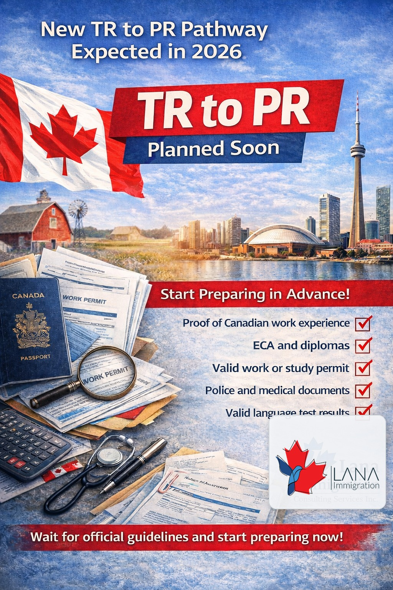

Nouveau parcours TR vers RP prévu en 2026
Le Canada pourrait lancer un nouveau parcours de résidence temporaire vers la résidence permanente en 2026. Ce que nous savons, qui pourrait être admissible et quels documents préparer.
Lire la suite →
Le Canada prolonge le statut des Ukrainiens jusqu'en 2027
Le Canada a prolongé les mesures temporaires pour les ressortissants ukrainiens jusqu'au 31 mars 2027. Permis de travail ouverts, permis d'études et rétablissement du statut sont disponibles.
Lire la suite →
Express Entry en 2026 : 5 nouveaux tirages par catégorie à connaître
Le système Express Entry du Canada s'est élargi avec cinq nouveaux tirages par catégorie en 2026. Découvrez ce qui a changé, qui est admissible et comment positionner votre profil.
Lire la suite →
RP plus rapide pour les travailleurs déjà au Canada : les nouveautés 2026
Le Canada accélère la résidence permanente pour 33 000 travailleurs temporaires déjà dans le pays. Découvrez si vous êtes admissible et comment postuler.
Lire la suite →
La réinitialisation de l'immigration au Canada : ce que le plan 2026 signifie pour vous
Le Canada a annoncé une réduction significative des niveaux d'immigration pour 2026. Comprenez les nouvelles cibles et comment ajuster votre stratégie.
Lire la suite →
Comment vous protéger contre la fraude en immigration au Canada
La fraude en immigration est en hausse. Apprenez à vérifier les références de votre consultant, repérer les arnaques courantes et protéger votre demande.
Lire la suite →
Louer au Canada : guide complet pour les nouveaux arrivants
Trouver votre premier logement au Canada peut être intimidant. Ce guide couvre tout, des contrats de bail à vos droits en tant que locataire.
Lire la suite →
Faire reconnaître vos diplômes étrangers au Canada
Comprenez le processus de reconnaissance des diplômes au Canada, des évaluations WES à l'obtention de licences professionnelles réglementées.
Lire la suite →
Étudier au Canada en 2026 : nouvelles règles essentielles pour les étudiants
Des changements majeurs aux permis d'études et aux PTPD redéfinissent l'éducation internationale au Canada. Voici ce que les futurs étudiants doivent savoir.
Lire la suite →
Pourquoi les immigrants francophones ont un avantage majeur en 2026
Le Canada priorise activement les immigrants francophones par des tirages Express Entry dédiés et des programmes provinciaux. Découvrez les avantages.
Lire la suite →
Pénurie de travailleurs qualifiés au Canada : opportunités pour les immigrants en 2026
Le Canada fait face à des pénuries critiques en santé, technologie et métiers spécialisés. Découvrez les professions les plus demandées.
Lire la suite →
Nouvelles règles de l'Ontario pour les nouveaux arrivants : ce qui a changé en 2026
L'Ontario a adopté une législation révolutionnaire affectant les nouveaux arrivants, de l'interdiction des exigences d'expérience canadienne à la transparence de l'IA dans l'embauche.
Lire la suite →
Score CRS minimum pour Express Entry au Canada en 2026
Quel score CRS faut-il pour Express Entry en 2026 ? Il n'y a pas de minimum fixe — découvrez comment fonctionnent les scores de coupure et comment élaborer votre stratégie.
Lire la suite →
7 façons d'augmenter votre score CRS
Bloqué dans le bassin Express Entry ? Voici 7 stratégies éprouvées pour améliorer votre score CRS — de la reprise du test linguistique à la candidature provinciale.
Lire la suite →
Peut-on immigrer au Canada sans offre d'emploi ?
Vous n'avez pas besoin d'offre d'emploi pour immigrer au Canada. Découvrez quels programmes vous permettent de postuler sur la base de votre profil seul.
Lire la suite →
Les programmes d'immigration les plus rapides au Canada
Quels programmes d'immigration canadiens sont les plus rapides ? Découvrez les délais de traitement d'Express Entry, des PCP et du Programme d'immigration atlantique.
Lire la suite →
Les provinces les plus faciles pour immigrer au Canada
Quelles provinces canadiennes sont les plus accessibles ? Un aperçu pratique de la Saskatchewan, la Nouvelle-Écosse, l'Î.-P.-É., le Manitoba et le Canada atlantique.
Lire la suite →
L'historique des tirages Express Entry expliqué
Comment lire et utiliser l'historique des tirages Express Entry de façon stratégique. Comprenez les types de tirages, les scores de coupure et les règles de départage.
Lire la suite →
Ce qu'il faut savoir sur Express Entry en 2025
Le système Express Entry continue d'évoluer. Voici ce que les candidats doivent savoir sur les dernières catégories de tirage, les tendances des scores SRC et comment renforcer votre profil cette année.
Lire la suite →